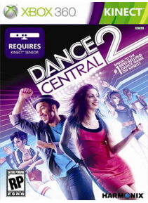

Dance Central 2 este un joc de ritm muzical dezvoltat de Harmonix şi publicat de Microsoft Game Studios pentru Xbox 360 Kinect .Modul de bază în Dance Central 2 este în mare parte identic cu originalul Central Dance . Jucatorii efectuează mişcari de dans date, care sunt urmarite de Kinect . Cu cat este mai exact jucatorul efectuează mutarea, cu atat mai multe puncte el / ea scoruri. Dificultaţi mai mari cresc complexitatea mişcarilor, iar marja de eroare este redusă.
Preţ : 11,03 €